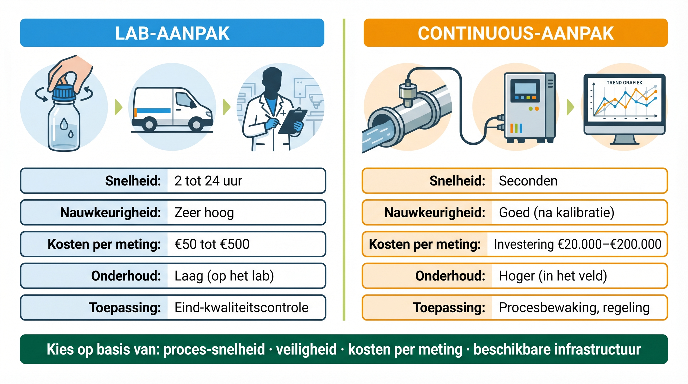
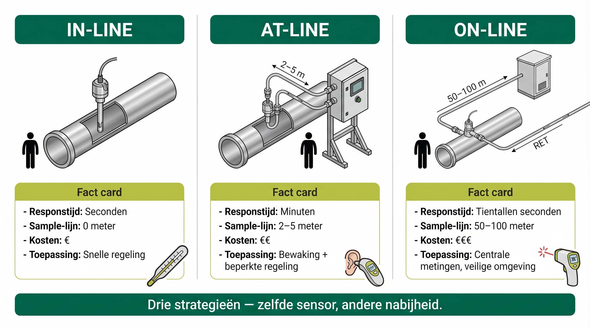
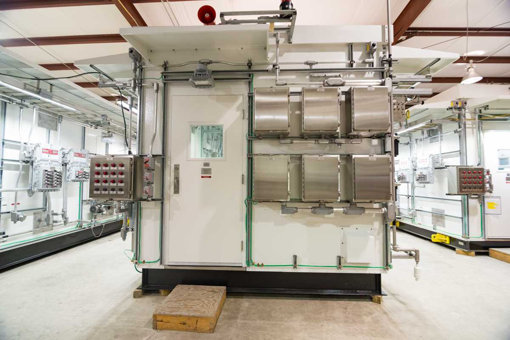
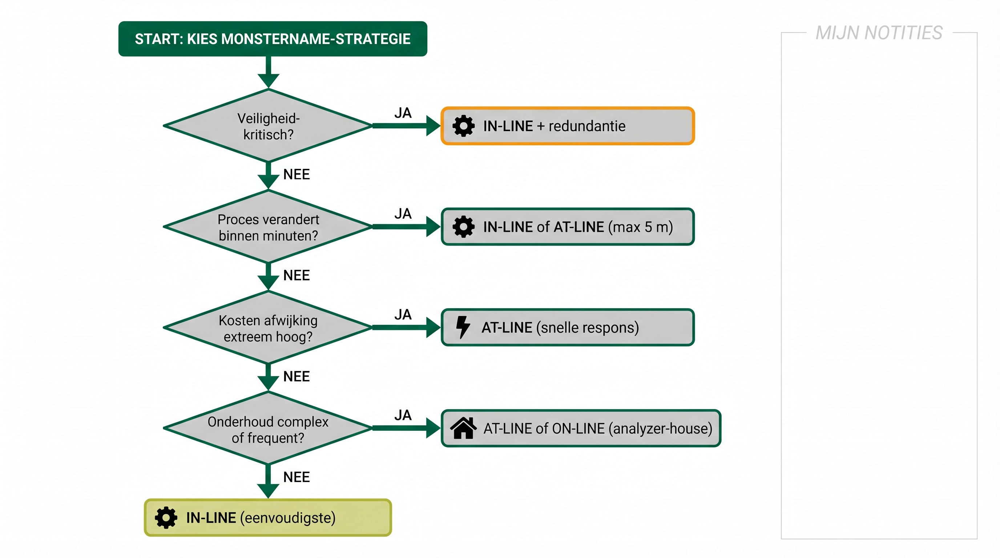

ANA – Module 3
2.1 Leerdoelen
Na het volgen van dit hoofdstuk kun je:
- Het verschil uitleggen tussen labsamples en continue metingen en wanneer je ze gebruikt
- De voordelen en nadelen van beide methoden beschrijven
- Een keuze maken voor de juiste manier van monstername in verschillende situaties
- De verschillende continue meting strategieën (in-line, at-line, on-line) herkennen en toepassen
2.2 Van koffieproever naar espressomachine: De evolutie van monstername
Van handmatige proeverij naar geautomatiseerde kwaliteitscontrole
Stel je voor: een koffieproever in een grote koffiebranderij moet de kwaliteit controleren. Hij heeft twee opties:
De traditionele methode: Elke ochtend neemt hij samples uit verschillende batches, brengt deze naar het lab, voert handmatige tests uit en krijgt rond de lunch de resultaten binnen.
De moderne methode: Een sensor in elke productielijn meet continu de kwaliteit en geeft direct feedback aan het productieproces.
Dit voorbeeld laat perfect het verschil zien tussen labsamples en continu meten in de procesindustrie.
Waarom is deze keuze zo belangrijk voor een technicus?
Bij kwaliteitscontrole van een chemisch proces bepaalt de manier van monstername vier dingen tegelijk:
⏳ Reactiesnelheid
Hoe snel kun je reageren op afwijkingen? Seconden, minuten of pas uren later?
⚙️ Procesbeheersing
Kun je het proces direct bijsturen, of alleen achteraf corrigeren?
💰 Kosten
Wat zijn de kosten per meting versus wat procesoptimalisatie oplevert?
✅ Betrouwbaarheid
Hoe goed geeft je meting weer wat er werkelijk in het proces gebeurt?
Net zoals de koffiebranderij moet elke industriële plant de juiste balans vinden tussen grondige controle en snelle respons.
2.3 Labsamples: De grondige inspectie
Handmatige monstername en laboratoriumanalyse
Labsamples zijn de traditionele manier van procesbewaking: een operator of laborant neemt op vaste tijden monsters, brengt deze naar een lab waar specialisten uitgebreide tests uitvoeren.
📷 M3-H2-foto-5: Laborant in kwaliteitslab met sample-potje
Laborant in witte jas pipetteert of plaatst een sample-potje in een analyse-apparaat (GC, FTIR of titrator).
Als technicus moet je begrijpen hoe dit werkt, want je gebruikt deze labresultaten om je analyzers goed in te stellen.
Wanneer worden labsamples toegepast?
🏭 Lange batch-processen
Bij verfproductie duurt één batch 8-12 uur. Labsamples aan het einde van elke batch zijn voldoende voor kwaliteitscontrole.
🧪 Ingewikkelde testen
Voor medicijnen zijn soms meer dan 20 verschillende tests nodig (zuiverheid, oplosbaarheid, houdbaarheid). Te ingewikkeld voor in-line.
⌛ Lang-durende tests
Bacterietesten in voedselproductie zijn cruciaal maar duren 1-2 dagen. Dat kun je niet continu doen.
📝 Officiële certificaten
De medicijn- en voedselindustrie hebben vaak officiële certificaten per batch nodig. Dit moet via een erkend lab.
📖 Praktijkvoorbeeld: kwaliteitscontrole biodieselproductie
Bij biodieselproductie worden labsamples gebruikt op drie momenten:
Grondstofcontrole
- Sample van aangevoerde plantaardige olie.
- Tests: vrije vetzuren, vochtgehalte, vervuiling.
- Hoe vaak: bij elke levering (1-2x per week).
Procesbewaking
- Sample na de reactor.
- Tests: conversiegraad (hoeveel is omgezet), methanol-gehalte.
- Hoe vaak: 1x per batch (elke 6 uur).
Eindproductcontrole
- Sample van het gefilterde eindproduct.
- Tests: FAME-gehalte (moet >96,5% zijn), zuurgetal, stabiliteit.
- Hoe vaak: 1x per batch — zonder goedkeuring geen verkoop.
Voordelen van labsamples
- Uitgebreide analysemogelijkheden: laboratoria hebben geavanceerde apparatuur die heel nauwkeurig kan meten. Deze apparaten zijn vaak te groot, te duur of te gevoelig om naast het proces te plaatsen.
- Hoge nauwkeurigheid: in het lab zijn de omstandigheden gecontroleerd (vaste temperatuur, schone lucht, geen trillingen) en getrainde mensen voeren de metingen uit. Dat maakt de resultaten zeer betrouwbaar.
- Flexibiliteit bij problemen: als er iets vreemds in je monster zit, kan het lab snel een extra test doen. Bij een analyzer naast het proces zou je eerst nieuwe apparatuur moeten installeren.
- Officiële certificering: lab-instrumenten worden gekalibreerd met officiële referentiemonsters. Dat geeft je volledige traceerbaarheid — je kunt precies aantonen hoe je gemeten hebt.
Nadelen van labsamples
- Tijdvertraging (wachttijd): van monstername tot resultaat kunnen 2-24 uur verstrijken. Als er iets mis is, is de productie vaak al verder gegaan.
- Logistieke drukte: sample-potjes, transport, labels en planning — bij elke stap kan iets fout gaan of vertraging ontstaan.
- Beperkt beeld: één monster laat misschien niet het hele plaatje zien. Als het proces continu draait, zie je maar een momentopname.
- Kosten per test: laboratoriumanalyses kosten tijd en geld (mensen, apparatuur, chemicaliën). Bij veel samples loopt dit op.

Overzicht: labsamples versus continue meting in de procesindustrie
In welke situatie zijn labsamples typisch de juiste keuze, ondanks de wachttijd?
A) Bij snelle procesregeling waarbij elke seconde telt
B) Voor wettelijke certificering en complexe analyses zoals bacterie- of medicijntests
C) Voor permanente bewaking van een SIL-gekoppelde veiligheidsmeting
D) Wanneer de meting goedkoper moet zijn dan continue meting
2.4 Continue meting: Real-time procesbeheersing
Geautomatiseerde continue monitoring
Continu meten werkt heel anders: in plaats van af en toe te controleren, wordt het proces continu in de gaten gehouden door automatische systemen die direct terugkoppelen.
Als technicus is dit jouw primaire werkgebied - dit zijn de systemen die je installeert, onderhoudt en instelt.
De kracht van continue procesbeheersing
- Snelle respons
Als bijvoorbeeld de pH stijgt, detecteert de pH analyzer binnen seconden de veranderende zuurgraad. Het systeem kan dan automatisch de dosering aanpassen. - Het proces optimaliseren
Met continue data kan het systeem zichzelf automatisch bijsturen voor het beste resultaat. Geen handmatig ingrijpen meer nodig. - Voorspellend onderhoud
Geleidelijke veranderingen in meetwaarden kunnen wijzen op slijtage van apparatuur, voordat het écht kapot gaat.
Waar wordt continu meten gebruikt?
Veiligheid-kritische bewaking
In een fornuis bijvoorbeeld wordt procesgas of olie verhit door verbranding. Voor veilige en efficiënte verbranding is de juiste hoeveelheid zuurstof cruciaal. Te weinig zuurstof leidt tot onvolledige verbranding met gevaarlijke CO-vorming. Te veel zuurstof verspilt brandstof en verhoogt NOx-uitstoot.
Daarom meten zuurstofanalyzers in de rookgassen continu, seconde voor seconde. Bij afwijkingen stuurt het systeem automatisch de luchttoevoer bij. Metingen af en toe zijn niet voldoende voor persoonsveiligheid.
- Snelle processen
Bij destillatie kunnen veranderingen binnen enkele minuten optreden. Continue monitoring voorkomt dat je product buiten specificatie valt. - Dure processen
Bij productie van medicijnen kunnen enkele minuten verkeerd product miljoenen euro's kosten. - Automatische procesregeling
Moderne raffinaderijen regelen fabrieksunits automatisch op basis van continue metingen voor de beste opbrengst.
📖 Praktijkvoorbeeld: continue ethyleenoxide bewaking
Bij ethyleenoxide-productie (zeer reactief en giftig) is veiligheid cruciaal. Daarom worden drie monitoring-lagen gecombineerd:
Reactor-ingang monitoring
- Zuurstof/ethyleen-verhouding (explosiepreventie).
- Elke 10 seconden een nieuwe meting.
- Bij afwijking: automatische noodstop binnen 30 seconden.
Reactor-uitgang monitoring
- EO-concentratie (proces-optimalisatie).
- Elke paar minuten een nieuwe meting.
- Automatische bijsturing van temperatuur en flow.
Omgevingsbewaking
- EO-lekkagedetectie (personeelsveiligheid).
- Elke 5 seconden een nieuwe meting.
- Bij alarm: evacuatieprocedure.
⚠️ Let op: Deze continue bewaking is essentieel omdat labsamples veel te traag zouden zijn voor deze gevaarlijke toepassing. Bovendien zou het nemen van monsters van ethyleenoxide (EO) zelf een groot veiligheidsrisico vormen – EO is extreem reactief, giftig en explosief. Door continue in-line of on-line monitoring te gebruiken, voorkom je dat operators gevaarlijke monsters moeten nemen en naar het lab moeten transporteren.
Wat is bij een gevaarlijk product zoals ethyleenoxide het belangrijkste argument voor continue meting in plaats van labsamples?
A) Het lab werkt niet met giftige stoffen
B) Snelle detectie en geen handmatige sample-name in een gevaarlijke zone
C) Continue meting is altijd goedkoper dan een lab
D) Een lab kan geen explosieve stoffen meten
✅ Voordelen van continue meting
- Snelle respons: detectie en correctie binnen seconden tot minuten, in plaats van uren.
- Minder productverlies: direct ingrijpen voorkomt dat grote hoeveelheden product buiten specificatie vallen.
- Betere procesbeheersing: constante feedback zorgt voor stabielere procescondities en hogere efficiëntie.
- Automatisering: continue data kan direct gekoppeld worden aan automatische regelsystemen.
⚠️ Nadelen van continue meting
- Hogere initiële kosten: een analyzer kost tussen €20.000 en €200.000, afhankelijk van het type. Labsamples kosten €50-500 per stuk.
- Regelmatig onderhoud: analyzers en sample conditioning systemen moeten regelmatig worden gekalibreerd, gereinigd of soms vervangen. Bij continue monitoring in de plant heb je niet alleen onderhoud aan de analyzer zelf (zoals in het lab), maar ook aan het hele sample conditioning systeem: filters, pompen, verwarming, drukregeling en sample-lijnen. Dit maakt het onderhoud complexer dan bij labanalyses.
- Technische complexiteit: je hebt geschoold personeel nodig dat de systemen kan installeren, onderhouden en repareren.
- Niet altijd mogelijk: sommige metingen zijn te complex of te gevoelig voor automatisering in de plant.
2.5 Hoe plaats je een analyzer? Drie strategieën in de praktijk
De kunst van het kiezen van de juiste plek
Nu je weet waarom continu meten belangrijk is, gaan we kijken: waar plaats je die analyzer precies? In de leiding zelf? Ernaast? Of toch op afstand met een sample conditioning systeem?
Als technicus ga je deze keuze niet alleen maken, maar je moet wel begrijpen wat de verschillen zijn en waarom engineers voor een bepaalde oplossing kiezen.

Overzicht van de drie monitoring-strategieën: in-line, at-line en on-line
Denk aan het verschil tussen:
- In-line: Een pH-sensor die rechtstreeks in de procesleiding zit
- At-line: Een pH-meter waar je handmatig een watermonster naartoe brengt
- On-line: Een pH-analyzer waar automatisch via een sample-lijn water naartoe wordt gepompt
- Allemaal meten ze pH, maar op verschillende manieren met elk hun eigen toepassing.
- In-line (In situ): De sensor zit midden in het proces
- Wat houdt het in?
Bij in-line monitoring zit de meetkop van de analyzer direct in de procesleiding of tank. De sensor heeft rechtstreeks contact met het product. Geen apart sample-systeem, geen transport - gewoon direct meten in de stroom. - Herkenbaar voorbeeld uit de plant
Stel je een grote afvalwater-leiding voor in een raffinaderij. Midden in die leiding zit een pH-sensor gemonteerd. Het afvalwater stroomt er continu overheen, en de sensor meet seconde voor seconde de pH-waarde. Die data gaat direct naar de control room waar operators het proces bijsturen.
📷 M3-H2-foto-6: In-line sensor op procesleiding
Close-up van een in-line sensor (pH, geleidbaarheid of optisch) direct geschroefd in een procesleiding via een insertion-fitting.
🔍 Wanneer kies je voor in-line? Plus voordelen en uitdagingen
Wanneer kies je voor in-line?
- Het proces verandert snel (binnen seconden of minuten).
- Direct ingrijpen is noodzakelijk.
- Onderhoudsarme metingen (druk, temperatuur, pH).
- Het proces is niet te vuil (heldere vloeistoffen of schone gassen).
Voordelen
- Snelste meting mogelijk — geen vertraging.
- Geen sample-systeem nodig — minder onderdelen.
- Perfect voor automatische regelsystemen.
Uitdagingen
- Sensor zit in het proces, vaak moeilijk bereikbaar.
- Sensor moet bestand zijn tegen hoge druk, temperatuur of agressieve chemicaliën.
- Bij vervuiling kan de sensor snel problemen krijgen.
- Om een sensor te vervangen moet het proces soms stopgezet worden.
Wat houdt het in?
Bij at-line monitoring staat de analyzer dicht bij de procesleiding of tank, bijvoorbeeld in een nabijgelegen shelter of analyzerruimte. Een operator neemt handmatig een sample uit het proces en brengt dit naar de analyzer. De analyzer zelf zit dus niet in direct contact met het proces, maar de afstand is klein genoeg om snel resultaten te krijgen.
Herkenbaar voorbeeld uit de plant
Stel je een operator voor die een kraantje opent aan een procesleiding en een flesje vult met een watermonster. Die loopt dan een paar meter naar een nabijgelegen shelter waar een pH-analyzer staat opgesteld. De operator biedt het sample aan bij de analyzer, die binnen enkele minuten de pH-waarde meet en doorgeeft aan de control room.
📷 M3-H2-foto-7: At-line analyzer-cabinet naast destillatiekolom
Beige/grijze analyzer-cabinet (GC) gemonteerd op platformniveau naast een hoge destillatiekolom; korte sample-leiding.
🔍 Wanneer kies je voor at-line? Plus voordelen en uitdagingen
Wanneer kies je voor at-line?
- Je wilt snelle metingen, maar het proces is te agressief of vuil voor een in-line sensor
- De analyzer heeft bescherming nodig tegen extreme omstandigheden (hoge druk, temperatuur, corrosieve stoffen)
- Je meet niet continu, maar op vaste momenten (bijvoorbeeld elk uur of elke shift)
- Het process is redelijk stabiel en verandert niet binnen seconden
Voordelen
- Analyzer staat beschermd in een shelter of analyzerruimte
- Geen risico op vervuiling of beschadiging van de sensor in het proces
- Geschikt voor complexere analyses die speciale apparatuur vereisen
- Flexibel: je kunt meerdere samples vanaf verschillende locaties naar dezelfde analyzer brengen
Uitdagingen
- Handmatig werk: operator moet het sample afnemen en naar de analyzer brengen.
- Kleine vertraging tussen sampling en meting.
- Sample kan veranderen tussen afname en meting (bijvoorbeeld temperatuur, ontgassing).
- Niet geschikt voor processen die zeer snel veranderen of directe actie vereisen.
On-line: de analyzer staat op afstand met een vaste sample-toevoer en eventueel een retour
Wat houdt het in?
Bij on-line monitoring staat de analyzer op grotere afstand van het proces — vaak in een aparte analyzer-house. Een sample wordt via leidingen naar de analyzer getransporteerd, geanalyseerd, en daarna teruggevoerd naar het proces. Deze sample-loop zorgt ervoor dat het sample representatief blijft.
Herkenbaar voorbeeld uit de plant
Stel je een groot raffinaderij-complex voor met 20 verschillende processen. In het midden staat één centraal analyzer-gebouw met daarin 15 verschillende analyzers. Vanaf alle procesunits lopen sample-leidingen (soms tientallen meters lang) naar dit gebouw. Na analyse gaat het sample via return-leidingen terug.

Analyzer shelter (Yokogawa) – een geklimatiseerde behuizing voor on-line analyzers
🔍 Wanneer kies je voor on-line? Plus voordelen en uitdagingen
Wanneer kies je voor on-line?
- Snelle respons over meerdere processen tegelijk.
- Centralisatie is efficiënt: meerdere processen bedienen vanaf één locatie.
- Gezamelijke utilities (gassen, koelwater, signalering, voeding) zijn beschikbaar.
- Klimaatbeheersing is cruciaal: één analyzer-house met HVAC.
Voordelen
- Veilige werkomgeving — schoon en klimaatgeregeld.
- Efficiënt onderhoud — alle apparatuur op één plek.
- Flexibiliteit — één analyzer kan meerdere processen bedienen.
Uitdagingen
- Lange sample-lijnen, soms met verwarming.
- Sample-vertraging zo acceptabel mogelijk houden.
- Complexiteit sample-systeem (pompen, temperatuur, drukregeling, schoon sample).
- Hogere investeringskosten (analyzer-house, lange leidingen, return-systeem).
Vergelijking in één oogopslag
| Aspect | In-line | At-line | On-line |
|---|---|---|---|
| Locatie sensor / analyzer | In het proces zelf | Naast het proces | Op afstand, in analyzer-house |
| Snelheid | Direct (seconden) | Minuten | Minuten (door sample-loop) |
| Sample-systeem | Geen | Handmatig (operator) | Automatisch via leidingen |
| Investering | Laag | Middel | Hoog (house, leidingen, retour) |
| Bereikbaarheid voor onderhoud | Vaak lastig (proces moet stop) | Goed (in shelter) | Zeer goed (gecentraliseerd) |
| Geschikt voor | Snelle, schone processen | Periodieke metingen | Meerdere of complexe processen |
Een procesleiding voert ruwe afvalwater af met veel zwevend slib. Welke monitoring-strategie ligt het meest voor de hand?
A) In-line: sensor direct in de leiding
B) At-line of on-line met filtratie en sample conditioning
C) Helemaal geen continue meting, alleen lab
D) Headspace-analyse boven de leiding
2.6 Hoe kies je de juiste strategie? Vier praktische vragen
Nu je de drie strategieën kent, blijft de vraag: welke kies je wanneer? In de praktijk stel je jezelf vier hoofdvragen:

Beslisboom: hoe kies je de juiste monitoring-strategie voor jouw proces?
📝 Bekijk alle vragen in detail (snelheid, kosten, kritisch, schadelijkheid, onderhoud)
Vraag 1: Hoe snel verandert het proces?
Als je proces snel verandert, heb je snelle metingen nodig. Als je proces traag is, mag de meting ook wat tijd kosten.
- Snel proces → In-line noodzakelijk
Een reactieproces. De samenstelling kan binnen 1 minuut veranderen. Je hebt in-line sensoren nodig die seconde per seconde meten bijvoorbeeld: geleidbaarheid, pH, Zuurstof - Traag proces → On-line mogelijk
Een uitlaat van een destillatie kolom verandert langzaam van samenstelling. Hier is een on-line kwaliteitscheck bijvoorbeeld van 1x per uur meer dan voldoende. Een sample-transport vertraging van 5 minuten heeft weinig impact.
Vraag 2: Wat zijn de kosten van een afwijking?
Hoe duur is het als je te laat reageert op een procesafwijking?
- Hoge kosten → Investeer in snelle meting
Bij productie van hoogwaardige polymeren kost één batch buiten specificatie €100.000. Als een snelle in-line analyzer van €80.000 dit voorkomt, is die binnen 1 batch terugverdiend. - Lage kosten → Goedkopere oplossing mag
Bij productie van bulkchemicaliën (zoutzuur, natriumhydroxide) zijn de marges laag. Hier is een lab-controle (at-line) voldoende.
Vraag 3: Hoe kritisch is de proces analyser?
Gaat het om een proces veiligheid of om product kwaliteit? Dan is betrouwbaarheid erg belangrijk.
Safety-kritische applicatie → Redundant analysesysteem
Bij een procesfornuis wordt de zuurstofconcentratie in de verbrandingslucht continu gemeten. Te weinig zuurstof leidt tot onvolledige verbranding en gevaarlijke CO-vorming. Te veel zuurstof is energieverspilling én een veiligheidsrisico.
Deze meting is zo kritisch dat er een SIL-classificatie (Safety Integrity Level) aan wordt toegekend. Dit betekent in de praktijk:
- Redundante sensoren: minimaal twee onafhankelijke zuurstofmeters
- Automatische noodstop bij afwijking
- Regelmatige functionele tests volgens een vast schema
- Uitgebreide documentatie van onderhoud en kalibratie
Bij SIL-toepassingen kies je meestal voor in-line of on-line met zeer korte sample-lijnen, zodat de reactietijd minimaal is.
Productkwaliteit →
- At-line (Lab): ISO-genormeerde kwaliteitsmetingen worden met behulp van at-line (Lab) analysers uitgevoerd.
- On-line: kan worden toegepast bij overeenstemming tussen klanten en leveranciers, bijvoorbeeld bij ethyleenlevering via een pijpleiding.
Vraag 4: schadelijkheid van het monster
Sommige processtromen bevatten stoffen die giftig, corrosief of brandbaar zijn. Dit beïnvloedt waar je de analyzer plaatst.
- Gevaarlijk monster → On-line in veilige omgeving
Bij meting van H₂S (zwavelwaterstof) of benzeen wil je het sample zo min mogelijk door de plant leiden. De analyzer staat in een geventileerd analyzerhuis, vaak buiten de ATEX-zone. Het sample wordt via een gesloten systeem aangevoerd en na meting veilig afgevoerd of teruggevoerd naar het proces. - Onschadelijk monster → In-line of at-line mogelijk
Bij meting van pH in koelwater of zuurstof in lucht is er weinig risico. Hier kan een in-line sensor direct in de leiding, of een at-line analyzer op het platform naast het proces.
Praktische overweging: bij gevaarlijke stoffen weegt veiligheid zwaarder dan snelheid. Liever een iets langere sample-tijd in een veilige omgeving dan een snelle meting waarbij technici risico lopen bij onderhoud.
Vraag 5: Hoe complex is het onderhoud?
Wie gaat dit onderhouden, hoe vaak, en hoe moeilijk is het? Je hebt niet altijd de keuze, maar als die mogelijkheid er wel is wordt dit meegenomen.
- Eenvoudig onderhoud
Een pH-sensor in een waterleiding is robuust. Een technicus kan 1x per maand controleren, kalibreren duurt 30 minuten. - Complex onderhoud
Een GC heeft maandelijks onderhoud nodig: chromatogram-check, draaggas-wissel, kalibratie met test-gas.
2.7 Integratie van beide methoden: Het beste van twee werelden
Waarom niet kiezen tussen labsamples en een continu meting?
In de praktijk zie je soms dat beide methoden worden gebruikt. Deze combinatie pakt het beste van beide: je hebt de snelheid van analyzers én de verificatie door een labanalyse.
Als technicus betekent dit dat je systemen onderhoudt waarbij beide methoden elkaar aanvullen.
Continu meting voor dagelijkse controle, lab voor verificatie
- Primaire procesregeling via continuous systems
Continue meetsystemen leveren 24/7 data voor automatische procesregeling en om operators te helpen. Deze systemen zijn ingericht voor snelle respons en hoge beschikbaarheid. - Periodieke verificatie via lab
Labsamples worden gebruikt om de analyzers te checken, en voor parameters die niet continu gemeten worden.
📖 Praktijkvoorbeeld: raffinaderij met beide methoden
Catalytic cracker monitoring — deze raffinaderij combineert continue procesbewaking met periodieke lab-verificatie:
Continue systems
- Samenstelling voeding (koolwaterstoffen C4-C12): on-line GC elke 15 minuten.
- Proces-optimalisatie: automatische temperatuur- en drukregeling op basis van continue data.
Lab-verificatie
- Gedetailleerde koolwaterstof-analyse: GC 1x per dag.
- Katalysator-activiteit: gespecialiseerde lab-tests 1x per week.
- Wettelijke samples: officiële testmethoden voor milieu-rapportage.
Voordelen van deze aanpak
- Het proces draait optimaal 24/7 op basis van continue data.
- Het lab controleert of de continue metingen de juiste resultaten geven.
- Wettelijke eisen worden gehaald zonder dat de procesefficiency eronder lijdt.
Hoe werk je met beide methoden?
Door regelmatig te vergelijken met lab-metingen kun je zien of er een verschil is tussen een lab resultaat en de analyser. Als het verschil tussen analyzer en lab groter wordt dan de toegestane afwijking, moet geprobeerd worden de oorzaak van het verschil te achterhalen.